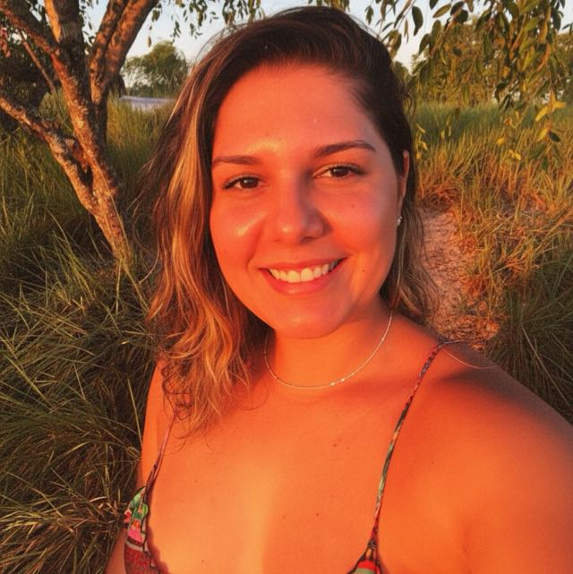

Este espaço representa muito mais do que uma lista de conquistas e metas: representa minha trajetória, construída com muita terapia, dedicação, aprendizados e evolução. Sou grata por tudo o que vivi, pelas dificuldades que consegui superar e por cada pequena vitória que me trouxe até aqui. Agradeço a você também por me proporcionar um espaço de acolhimento e reflexão, que me ajuda a enxergar minha própria caminhada. Que o próximo ano seja de novas conquistas, mas também de mais leveza, equilíbrio e capacidade de aproveitar cada etapa do caminho.
Minha autonomia e autoconhecimento foram construídas e lapidadas
Vivenciei uma evolução na minha trajetória profissional, assumindo novas responsabilidades e tendo contato com projetos e desafios diferentes. Ampliei meus conhecimentos, especialmente na área administrativa e de tecnologia, e passei a enxergar novas possibilidades para minha carreira.
Concluí mais uma etapa importante da minha formação acadêmica (Gestão de TI), demonstrando comprometimento e capacidade de conciliar trabalho, estudos e responsabilidades pessoais. Essa conquista representa investimento no meu futuro e ampliação das minhas possibilidades profissionais.
Comecei a compreender que dizer não também é uma forma de cuidado pessoal. Passei a entender que não preciso assumir todas as responsabilidades, agradar a todos ou ultrapassar meus próprios limites para corresponder às expectativas externas.
Dei um passo importante na minha vida pessoal, permitindo que uma parte significativa da minha vida afetiva também fizesse parte do convívio familiar. Isso representa mais liberdade para viver minhas escolhas, com naturalidade, segurança e menos preocupação com julgamentos.
Desenvolvi uma percepção maior sobre minhas necessidades individuais, meu tempo e minha privacidade. Entendi que ter meu próprio espaço não significa afastar as pessoas, mas reconhecer que também preciso de momentos individuais.
Uma das conquistas mais significativas: construir meu próprio espaço, desenvolver autonomia e ter um ambiente que represente minhas escolhas. Mais do que uma conquista material, representa independência, responsabilidade e a possibilidade de construir uma vida do meu jeito.
Meus nós internos e pontos de apoio onde o trabalho terapêutico é indispensável
Tenho tendência a permanecer no ambiente e nas atividades que já conheço, priorizando responsabilidades e compromissos. Às vezes, acabo deixando de experimentar coisas novas por falta de planejamento ou por acreditar que não tenho tempo. Quero aprender a flexibilizar minha rotina, experimentar novas experiências e entender que nem tudo precisa ser produtivo.
Tenho o hábito de antecipar situações, planejar possibilidades e me preocupar com coisas que ainda nem aconteceram. Embora pensar no futuro seja importante para alcançar meus objetivos, percebo que isso pode prejudicar minha capacidade de aproveitar o presente. Quero desenvolver mais tranquilidade diante das incertezas, compreender que nem tudo está sob meu controle e aprender a lidar com as situações conforme elas acontecem.
Direcionamento intencional ancorado em: Equilíbrio, Saúde, Crescimento e Segurança
Aprender a equilibrar melhor minhas responsabilidades, meus momentos individuais e a vida a dois. Estar mais presente, aproveitar os momentos sem tantas preocupações e evitar que a rotina transforme tudo em obrigação. Desenvolver a capacidade de aproveitar o presente, sem estar sempre pensando no que ainda precisa ser feito.
Transformar a atividade física em um compromisso fixo, e não em algo que depende exclusivamente da motivação. Cuidar melhor da saúde física e mental, melhorar meu condicionamento e estabelecer uma rotina sustentável. Começar com uma frequência possível, como três vezes por semana, priorizando a constância.
Continuar investindo no meu desenvolvimento profissional, aproveitando minha formação em Gestão da Tecnologia da Informação. Buscar uma oportunidade que represente crescimento, estabilidade e melhores perspectivas de carreira. Estabelecer uma rotina de estudos com metas semanais, revisões e acompanhamento do meu desempenho, transformando a preparação em um projeto concreto com disciplina e planejamento.
Recuperar minha segurança financeira depois das conquistas e responsabilidades assumidas. Desenvolver mais disciplina com o dinheiro, estabelecer um valor mensal de economia e evitar gastos desnecessários. Construir uma reserva que me proporcione tranquilidade, autonomia e maior segurança diante de imprevistos.